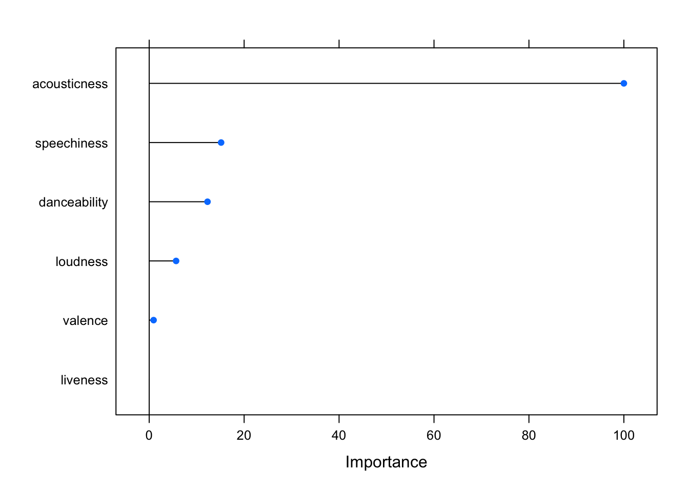

Loading required package: plyr
------------------------------------------------------------------------------
You have loaded plyr after dplyr - this is likely to cause problems.
If you need functions from both plyr and dplyr, please load plyr first, then dplyr:
library(plyr); library(dplyr)
------------------------------------------------------------------------------
Attaching package: 'plyr'
The following objects are masked from 'package:dplyr':
arrange, count, desc, failwith, id, mutate, rename, summarise,
summarize
The following object is masked from 'package:purrr':
compact
Loading required package: scales
Attaching package: 'scales'
The following object is masked from 'package:purrr':
discard
The following object is masked from 'package:readr':
col_factor
Loading required package: grid
library(class)
PCA and Authorship
PCAs are often used for reducing dimensions when we have lots of variables but a model might be better suited from combining those variables. PCAs have also been used a fair bit to explore questions of authorship. Here we have a question of authorship using symbolic data taken from scores. We are trying to explore the music of Josquin.
Jesse Rodin’s Josquin Research Project has given levels of security for attribution, including pieces that we know are Josquin’s, those we think might be, and those which are more questionable.
This code runs the actual principal components analysis.
It also provides a scree plot, allowing us to see which components are the most heavily weighted. This can allow us to reduce the dimensions as we see fit.
It’s worth taking some time to explore what each of these components actually means and how they’re weighted. PCA is weighting instances of parallel motion and similar motion pretty heavily, but negatively weighting pitch entropy and oblique motion. PC2 seems to be looking at nPVI and 9-8 suspensions.
Plotting our two composers with the first two principal components.
g <-ggbiplot(pieces.pca, obs.scale =1, var.scale =1, groups = composer, ellipse =TRUE, circle =TRUE)g <- g +scale_color_discrete(name ='')g <- g +theme(legend.direction ='horizontal', legend.position ='top') +theme_bw()print(g)
# we can change the number of components# seven_component_model <- data.frame(pieces.pca$x[,1:8])
We can also look at how much each of these features is being weighted within the first two components.
A classifier is a model that assigns a label to data based on the input. There are many types of classifiers, and we will be evaluating various models throughout the week.
Our goal will be to train a model on the features generally associated with a category, and then test the accuracy of that model. For now, a good starting point might be our Christmas Song question from last week.
Returning to our Christmas Song Problem
First, let’s get the data and add a column that tells us whether it’s a Christmas song or not
### get the data and add yes/no column.christmas <-get_playlist_audio_features("", "5OP7itTh52BMfZS1DJrdlv")christmas$christmas <-"yes"not <-get_playlist_audio_features("", "6i2Qd6OpeRBAzxfscNXeWp")not$christmas <-"no"## combine the two datasets and get the columns we want to use.christmas_subset <-rbind(christmas, not)christmas_subset <- christmas_subset %>%select(c("christmas", "acousticness", "liveness", "danceability", "loudness", "speechiness", "valence"))
Now we can use the createDataPartition function from the caret library to create a testing and a training dataset. Here, I’ve chosen a 70/30 partition of training and testing, but you can adjust as you see fit.
We can pretty easily implement something like a neural network, using our training dataset to train it:
# weights: 9
initial value 105.548780
iter 10 value 99.305813
iter 20 value 85.550921
iter 30 value 84.329232
iter 40 value 83.982739
iter 50 value 83.786811
iter 60 value 83.534379
iter 70 value 83.296760
iter 80 value 83.158788
iter 90 value 82.931814
iter 100 value 82.418621
final value 82.418621
stopped after 100 iterations
# weights: 25
initial value 113.182544
iter 10 value 95.290704
iter 20 value 85.770530
iter 30 value 85.394476
iter 40 value 83.391303
iter 50 value 78.481908
iter 60 value 74.946046
iter 70 value 73.766403
iter 80 value 73.698310
iter 90 value 72.926040
iter 100 value 72.666757
final value 72.666757
stopped after 100 iterations
# weights: 41
initial value 140.134536
iter 10 value 99.808723
iter 20 value 86.931843
iter 30 value 80.725876
iter 40 value 77.431157
iter 50 value 75.372919
iter 60 value 75.348892
final value 75.348575
converged
# weights: 9
initial value 108.318670
iter 10 value 102.367233
iter 20 value 96.061722
final value 96.057117
converged
# weights: 25
initial value 104.896111
iter 10 value 97.236850
iter 20 value 95.979029
iter 30 value 95.764626
iter 40 value 95.629547
final value 95.628517
converged
# weights: 41
initial value 105.346226
iter 10 value 96.366951
iter 20 value 95.920758
iter 30 value 95.788685
iter 40 value 95.578934
iter 50 value 95.549226
iter 60 value 95.494547
iter 70 value 95.493929
final value 95.493689
converged
# weights: 9
initial value 107.959009
iter 10 value 103.970165
iter 20 value 103.303502
iter 30 value 103.277541
iter 40 value 102.954042
iter 50 value 102.673078
iter 60 value 102.657166
iter 70 value 102.643732
iter 80 value 101.740597
iter 90 value 101.679885
iter 100 value 101.650323
final value 101.650323
stopped after 100 iterations
# weights: 25
initial value 138.680367
iter 10 value 100.168336
iter 20 value 87.755922
iter 30 value 87.260896
iter 40 value 83.778148
iter 50 value 82.995379
iter 60 value 82.504904
iter 70 value 82.320352
iter 80 value 82.097456
iter 90 value 82.022086
iter 100 value 81.809544
final value 81.809544
stopped after 100 iterations
# weights: 41
initial value 161.345579
iter 10 value 97.070653
iter 20 value 76.363142
iter 30 value 73.856676
iter 40 value 73.448977
iter 50 value 73.216767
iter 60 value 73.170633
iter 70 value 72.576618
iter 80 value 72.402320
iter 90 value 72.108029
iter 100 value 71.799490
final value 71.799490
stopped after 100 iterations
# weights: 9
initial value 111.459871
iter 10 value 86.318806
iter 20 value 83.595004
iter 30 value 83.001900
iter 40 value 81.155468
iter 50 value 79.919211
iter 60 value 79.111389
iter 70 value 78.682229
iter 80 value 78.419375
iter 90 value 78.278213
iter 100 value 78.054799
final value 78.054799
stopped after 100 iterations
# weights: 25
initial value 107.527780
iter 10 value 96.439931
iter 20 value 84.986617
iter 30 value 84.196821
iter 40 value 78.910448
iter 50 value 74.336499
iter 60 value 72.815273
iter 70 value 72.772904
iter 80 value 72.746185
iter 90 value 72.744289
final value 72.744283
converged
# weights: 41
initial value 113.861570
iter 10 value 97.353360
iter 20 value 84.288901
iter 30 value 79.107563
iter 40 value 69.679136
iter 50 value 61.070380
iter 60 value 58.807881
iter 70 value 58.754148
final value 58.753934
converged
# weights: 9
initial value 103.170014
iter 10 value 101.566206
iter 20 value 89.930492
iter 30 value 89.634602
final value 89.634537
converged
# weights: 25
initial value 103.886324
iter 10 value 98.360023
iter 20 value 89.248785
iter 30 value 88.178304
iter 40 value 87.628705
iter 50 value 87.564303
iter 60 value 87.557776
iter 70 value 87.516328
iter 80 value 87.277603
iter 90 value 87.273295
final value 87.273253
converged
# weights: 41
initial value 105.280513
iter 10 value 98.854860
iter 20 value 89.133614
iter 30 value 87.468131
iter 40 value 87.215171
iter 50 value 87.202491
iter 60 value 87.201631
iter 70 value 87.199340
iter 80 value 87.199277
iter 90 value 87.196786
iter 100 value 87.195352
final value 87.195352
stopped after 100 iterations
# weights: 9
initial value 103.401753
iter 10 value 90.387147
iter 20 value 84.144932
iter 30 value 83.402904
iter 40 value 82.611500
iter 50 value 79.977403
iter 60 value 79.521278
iter 70 value 79.350488
iter 80 value 79.326161
iter 90 value 79.313940
iter 100 value 79.292311
final value 79.292311
stopped after 100 iterations
# weights: 25
initial value 102.580303
iter 10 value 88.354155
iter 20 value 84.885358
iter 30 value 84.794313
iter 40 value 84.311763
iter 50 value 84.304325
iter 60 value 84.255296
iter 70 value 83.489919
iter 80 value 81.783425
iter 90 value 79.880645
iter 100 value 79.721938
final value 79.721938
stopped after 100 iterations
# weights: 41
initial value 115.039601
iter 10 value 101.278149
iter 20 value 83.868791
iter 30 value 82.019693
iter 40 value 80.435558
iter 50 value 79.024062
iter 60 value 76.886966
iter 70 value 76.413754
iter 80 value 76.007182
iter 90 value 75.650557
iter 100 value 75.539322
final value 75.539322
stopped after 100 iterations
# weights: 9
initial value 104.436845
iter 10 value 100.367179
iter 20 value 75.602711
iter 30 value 75.181491
iter 40 value 74.188757
iter 50 value 71.760536
iter 60 value 70.840662
iter 70 value 70.653812
iter 80 value 70.539274
iter 90 value 70.309163
iter 100 value 70.226565
final value 70.226565
stopped after 100 iterations
# weights: 25
initial value 118.342228
iter 10 value 92.490202
iter 20 value 75.531188
iter 30 value 75.057198
iter 40 value 72.382515
iter 50 value 71.941386
iter 60 value 70.603733
iter 70 value 69.021824
iter 80 value 66.981946
iter 90 value 66.488876
iter 100 value 65.359126
final value 65.359126
stopped after 100 iterations
# weights: 41
initial value 109.455240
iter 10 value 84.619133
iter 20 value 73.676312
iter 30 value 71.600342
iter 40 value 68.925553
iter 50 value 68.376428
iter 60 value 66.835143
iter 70 value 64.132211
iter 80 value 63.654220
iter 90 value 63.267899
iter 100 value 62.770456
final value 62.770456
stopped after 100 iterations
# weights: 9
initial value 110.191781
iter 10 value 102.257333
iter 20 value 85.259035
iter 30 value 82.521943
final value 82.512480
converged
# weights: 25
initial value 109.553059
iter 10 value 96.373742
iter 20 value 83.279033
iter 30 value 82.295775
iter 40 value 82.208106
iter 50 value 82.157945
iter 60 value 82.112638
iter 70 value 82.105269
final value 82.105000
converged
# weights: 41
initial value 113.712826
iter 10 value 99.782644
iter 20 value 83.142420
iter 30 value 82.151027
iter 40 value 82.109528
iter 50 value 82.079257
iter 60 value 82.072028
iter 70 value 82.060029
iter 80 value 82.055638
iter 90 value 82.054928
final value 82.054926
converged
# weights: 9
initial value 107.224117
iter 10 value 101.744475
iter 20 value 79.223403
iter 30 value 74.674058
iter 40 value 73.573640
iter 50 value 72.536458
iter 60 value 72.226060
iter 70 value 72.186907
iter 80 value 72.157213
iter 90 value 72.113731
iter 100 value 72.079940
final value 72.079940
stopped after 100 iterations
# weights: 25
initial value 103.110190
iter 10 value 93.707755
iter 20 value 77.699743
iter 30 value 74.585859
iter 40 value 70.496095
iter 50 value 67.080441
iter 60 value 64.512940
iter 70 value 61.810197
iter 80 value 61.311014
iter 90 value 60.917967
iter 100 value 60.743712
final value 60.743712
stopped after 100 iterations
# weights: 41
initial value 105.992789
iter 10 value 93.421008
iter 20 value 78.915816
iter 30 value 70.028411
iter 40 value 62.753313
iter 50 value 58.643010
iter 60 value 52.965018
iter 70 value 49.855986
iter 80 value 48.433006
iter 90 value 47.026146
iter 100 value 46.403917
final value 46.403917
stopped after 100 iterations
# weights: 9
initial value 104.304878
iter 10 value 96.410948
iter 20 value 87.654044
iter 30 value 87.001312
iter 40 value 84.939544
iter 50 value 82.624962
iter 60 value 82.182191
iter 70 value 81.877456
iter 80 value 80.454430
iter 90 value 80.376628
iter 100 value 80.342056
final value 80.342056
stopped after 100 iterations
# weights: 25
initial value 106.208900
iter 10 value 97.753748
iter 20 value 87.669808
iter 30 value 81.679853
iter 40 value 71.701285
iter 50 value 64.972637
iter 60 value 64.580766
iter 70 value 64.019493
iter 80 value 63.191453
iter 90 value 62.183200
iter 100 value 61.939888
final value 61.939888
stopped after 100 iterations
# weights: 41
initial value 115.378276
iter 10 value 102.355877
iter 20 value 87.849114
iter 30 value 80.276690
iter 40 value 78.423701
iter 50 value 78.341097
final value 78.341009
converged
# weights: 9
initial value 118.804635
iter 10 value 102.034182
iter 20 value 93.281639
iter 30 value 92.902039
final value 92.895286
converged
# weights: 25
initial value 109.220687
iter 10 value 101.742625
iter 20 value 96.345740
iter 30 value 92.649917
iter 40 value 91.920550
iter 50 value 91.863402
iter 60 value 91.795119
iter 70 value 91.777407
iter 80 value 91.770919
final value 91.770884
converged
# weights: 41
initial value 106.140076
iter 10 value 95.003412
iter 20 value 91.874645
iter 30 value 91.726160
iter 40 value 91.717857
iter 50 value 91.713770
iter 60 value 91.712066
iter 70 value 91.711243
iter 80 value 91.709776
iter 90 value 91.709090
iter 100 value 91.708616
final value 91.708616
stopped after 100 iterations
# weights: 9
initial value 103.713109
iter 10 value 98.560784
iter 20 value 88.085225
iter 30 value 86.642712
iter 40 value 85.805913
iter 50 value 85.437842
iter 60 value 85.433247
final value 85.431995
converged
# weights: 25
initial value 106.670108
iter 10 value 101.926420
iter 20 value 92.183387
iter 30 value 85.812726
iter 40 value 83.983280
iter 50 value 83.678128
iter 60 value 83.519139
iter 70 value 83.222681
iter 80 value 83.098208
iter 90 value 82.987664
iter 100 value 82.842261
final value 82.842261
stopped after 100 iterations
# weights: 41
initial value 105.527915
iter 10 value 96.978226
iter 20 value 88.263349
iter 30 value 85.777502
iter 40 value 85.498675
iter 50 value 85.421266
iter 60 value 84.776695
iter 70 value 82.571670
iter 80 value 82.355205
iter 90 value 82.033313
iter 100 value 81.950200
final value 81.950200
stopped after 100 iterations
# weights: 9
initial value 124.164966
iter 10 value 103.469676
iter 20 value 100.627115
iter 30 value 83.227682
iter 40 value 81.024508
iter 50 value 79.894869
iter 60 value 79.167872
iter 70 value 78.947644
iter 80 value 78.472925
iter 90 value 78.292991
iter 100 value 78.244363
final value 78.244363
stopped after 100 iterations
# weights: 25
initial value 106.842419
iter 10 value 103.483434
iter 20 value 99.359665
iter 30 value 82.033518
iter 40 value 81.582418
iter 50 value 79.448577
iter 60 value 74.183636
iter 70 value 71.330195
iter 80 value 71.182059
iter 90 value 71.180491
iter 100 value 71.169786
final value 71.169786
stopped after 100 iterations
# weights: 41
initial value 145.321776
iter 10 value 96.882023
iter 20 value 82.900517
iter 30 value 79.716181
iter 40 value 73.872034
iter 50 value 73.360174
iter 60 value 73.329501
iter 70 value 73.326672
final value 73.326671
converged
# weights: 9
initial value 107.616562
iter 10 value 102.030521
iter 20 value 91.710979
iter 30 value 91.698595
final value 91.698461
converged
# weights: 25
initial value 109.002369
iter 10 value 92.434387
iter 20 value 91.460698
iter 30 value 90.964953
iter 40 value 90.864857
iter 50 value 90.623722
iter 60 value 90.559097
iter 70 value 90.530129
iter 80 value 90.527386
final value 90.527378
converged
# weights: 41
initial value 112.381871
iter 10 value 101.432563
iter 20 value 93.165711
iter 30 value 90.850094
iter 40 value 90.666492
iter 50 value 90.532014
iter 60 value 90.441371
iter 70 value 90.437617
iter 80 value 90.427598
iter 90 value 90.426711
iter 100 value 90.418273
final value 90.418273
stopped after 100 iterations
# weights: 9
initial value 107.067967
iter 10 value 95.871270
iter 20 value 82.141053
iter 30 value 81.740070
iter 40 value 81.528154
iter 50 value 80.019031
iter 60 value 79.353873
iter 70 value 78.800917
iter 80 value 78.750879
iter 90 value 78.741965
iter 100 value 78.720532
final value 78.720532
stopped after 100 iterations
# weights: 25
initial value 116.241926
iter 10 value 89.816936
iter 20 value 81.725628
iter 30 value 79.895583
iter 40 value 77.409822
iter 50 value 77.319679
iter 60 value 77.303980
iter 70 value 76.999728
iter 80 value 76.910211
iter 90 value 76.745010
iter 100 value 76.371907
final value 76.371907
stopped after 100 iterations
# weights: 41
initial value 112.135512
iter 10 value 100.112473
iter 20 value 79.833842
iter 30 value 71.426544
iter 40 value 68.954538
iter 50 value 67.470075
iter 60 value 66.736906
iter 70 value 66.333797
iter 80 value 66.123840
iter 90 value 65.326904
iter 100 value 63.471133
final value 63.471133
stopped after 100 iterations
# weights: 9
initial value 103.886578
iter 10 value 100.799579
iter 20 value 77.546331
iter 30 value 74.694049
iter 40 value 70.287039
iter 50 value 69.344378
iter 60 value 69.019951
iter 70 value 68.864672
iter 80 value 68.345645
iter 90 value 68.249730
iter 100 value 68.248076
final value 68.248076
stopped after 100 iterations
# weights: 25
initial value 109.688916
iter 10 value 103.464954
iter 20 value 101.335435
iter 30 value 101.317075
final value 101.317054
converged
# weights: 41
initial value 118.268542
iter 10 value 85.461804
iter 20 value 80.466675
iter 30 value 70.921039
iter 40 value 64.202990
iter 50 value 60.537730
iter 60 value 57.213510
iter 70 value 55.455647
iter 80 value 55.378050
iter 90 value 55.376734
final value 55.376733
converged
# weights: 9
initial value 104.481301
iter 10 value 98.086402
iter 20 value 88.134122
final value 88.112568
converged
# weights: 25
initial value 109.732616
iter 10 value 89.213232
iter 20 value 88.174265
iter 30 value 87.894818
iter 40 value 87.548589
iter 50 value 86.046138
iter 60 value 85.996523
final value 85.995853
converged
# weights: 41
initial value 108.561414
iter 10 value 96.741737
iter 20 value 88.278527
iter 30 value 87.415484
iter 40 value 86.604183
iter 50 value 86.014336
iter 60 value 85.907302
iter 70 value 85.848709
iter 80 value 85.840583
final value 85.840491
converged
# weights: 9
initial value 108.883428
iter 10 value 103.021485
iter 20 value 85.121260
iter 30 value 76.428475
iter 40 value 74.030384
iter 50 value 73.621749
iter 60 value 73.590749
iter 70 value 73.484609
iter 80 value 73.481874
iter 90 value 73.479524
iter 90 value 73.479524
final value 73.479524
converged
# weights: 25
initial value 107.985982
iter 10 value 95.853680
iter 20 value 79.377511
iter 30 value 73.559092
iter 40 value 64.758784
iter 50 value 63.987236
iter 60 value 63.102683
iter 70 value 63.061674
iter 80 value 62.898830
iter 90 value 62.502699
iter 100 value 62.318989
final value 62.318989
stopped after 100 iterations
# weights: 41
initial value 104.850542
iter 10 value 101.447681
iter 20 value 79.769502
iter 30 value 69.727647
iter 40 value 61.704842
iter 50 value 60.235851
iter 60 value 59.230031
iter 70 value 58.785256
iter 80 value 58.593507
iter 90 value 58.462752
iter 100 value 58.399495
final value 58.399495
stopped after 100 iterations
# weights: 9
initial value 119.591282
iter 10 value 100.910204
iter 20 value 99.532876
iter 30 value 99.425547
iter 40 value 99.399219
final value 99.399058
converged
# weights: 25
initial value 101.827427
iter 10 value 95.650981
iter 20 value 90.148287
iter 30 value 82.356606
iter 40 value 77.942320
iter 50 value 75.982238
iter 60 value 75.927832
iter 70 value 75.927180
final value 75.927136
converged
# weights: 41
initial value 128.013689
iter 10 value 99.910337
iter 20 value 92.827871
iter 30 value 87.452560
iter 40 value 73.963476
iter 50 value 68.758747
iter 60 value 67.706865
iter 70 value 65.811103
iter 80 value 64.338498
iter 90 value 62.429819
iter 100 value 61.235966
final value 61.235966
stopped after 100 iterations
# weights: 9
initial value 117.373593
iter 10 value 100.618033
iter 20 value 94.785638
final value 94.725298
converged
# weights: 25
initial value 120.326465
iter 10 value 100.441254
iter 20 value 94.949840
iter 30 value 94.404125
iter 40 value 94.397119
iter 50 value 94.396789
final value 94.396697
converged
# weights: 41
initial value 116.618200
iter 10 value 97.388813
iter 20 value 94.769844
iter 30 value 94.519242
iter 40 value 94.510510
iter 50 value 94.431073
iter 60 value 94.374555
iter 70 value 94.361870
iter 80 value 94.351547
iter 90 value 94.325079
iter 100 value 94.318803
final value 94.318803
stopped after 100 iterations
# weights: 9
initial value 111.084162
iter 10 value 100.903144
iter 20 value 94.616325
iter 30 value 90.132772
iter 40 value 87.252254
iter 50 value 86.773143
iter 60 value 86.731365
iter 70 value 86.709826
iter 80 value 86.688309
iter 90 value 86.659996
final value 86.658678
converged
# weights: 25
initial value 101.395413
iter 10 value 98.724051
iter 20 value 85.210931
iter 30 value 73.991684
iter 40 value 70.870871
iter 50 value 70.254338
iter 60 value 70.115892
iter 70 value 69.819294
iter 80 value 69.026490
iter 90 value 68.700337
iter 100 value 68.604219
final value 68.604219
stopped after 100 iterations
# weights: 41
initial value 105.349513
iter 10 value 100.144706
iter 20 value 89.173219
iter 30 value 76.961829
iter 40 value 68.433299
iter 50 value 67.469346
iter 60 value 67.113353
iter 70 value 66.774477
iter 80 value 66.414127
iter 90 value 66.198255
iter 100 value 66.130665
final value 66.130665
stopped after 100 iterations
# weights: 9
initial value 104.902324
iter 10 value 103.191387
iter 20 value 98.715724
iter 30 value 82.875933
iter 40 value 80.066273
iter 50 value 76.118242
iter 60 value 76.073502
iter 70 value 76.069428
iter 80 value 76.066555
iter 90 value 76.065017
iter 100 value 76.063880
final value 76.063880
stopped after 100 iterations
# weights: 25
initial value 106.717038
iter 10 value 101.720251
iter 20 value 89.443293
iter 30 value 84.529194
iter 40 value 83.679203
iter 50 value 83.672462
final value 83.672456
converged
# weights: 41
initial value 119.498009
iter 10 value 98.341343
iter 20 value 88.535431
iter 30 value 80.156214
iter 40 value 65.883828
iter 50 value 59.986495
iter 60 value 57.232529
iter 70 value 56.557155
iter 80 value 56.500089
iter 90 value 56.442360
iter 100 value 56.332767
final value 56.332767
stopped after 100 iterations
# weights: 9
initial value 103.664205
iter 10 value 102.628896
iter 20 value 93.600361
iter 30 value 93.140455
final value 93.140436
converged
# weights: 25
initial value 105.754728
iter 10 value 102.181996
iter 20 value 94.775645
iter 30 value 92.426056
iter 40 value 91.588005
iter 50 value 91.526012
final value 91.526002
converged
# weights: 41
initial value 109.479067
iter 10 value 101.087043
iter 20 value 92.929385
iter 30 value 92.269052
iter 40 value 91.470486
iter 50 value 91.307563
iter 60 value 91.288086
iter 70 value 91.278753
iter 80 value 91.278703
final value 91.278645
converged
# weights: 9
initial value 109.909434
iter 10 value 103.314908
iter 20 value 103.292361
iter 30 value 103.077435
iter 40 value 101.859889
iter 50 value 101.852508
iter 60 value 101.830975
iter 70 value 101.820930
iter 80 value 101.817885
final value 101.817806
converged
# weights: 25
initial value 116.179509
iter 10 value 102.611023
iter 20 value 90.275873
iter 30 value 89.466763
iter 40 value 88.875505
iter 50 value 86.155863
iter 60 value 84.939615
iter 70 value 84.478966
iter 80 value 83.749008
iter 90 value 83.398364
iter 100 value 83.227335
final value 83.227335
stopped after 100 iterations
# weights: 41
initial value 103.828700
iter 10 value 99.677361
iter 20 value 84.719422
iter 30 value 74.629334
iter 40 value 62.393755
iter 50 value 58.398612
iter 60 value 56.568326
iter 70 value 55.425339
iter 80 value 55.183151
iter 90 value 54.858193
iter 100 value 54.416591
final value 54.416591
stopped after 100 iterations
# weights: 9
initial value 103.801120
iter 10 value 102.810990
iter 20 value 84.989905
iter 30 value 83.722199
iter 40 value 83.576778
iter 50 value 83.457434
iter 60 value 83.435092
iter 70 value 83.416740
iter 80 value 83.407960
iter 90 value 83.395874
iter 100 value 83.384467
final value 83.384467
stopped after 100 iterations
# weights: 25
initial value 103.685406
iter 10 value 99.142922
iter 20 value 82.415334
iter 30 value 79.441613
iter 40 value 77.123544
iter 50 value 75.713516
iter 60 value 74.668464
iter 70 value 74.367249
iter 80 value 74.056591
iter 90 value 73.968236
iter 100 value 73.948042
final value 73.948042
stopped after 100 iterations
# weights: 41
initial value 110.034044
iter 10 value 90.367835
iter 20 value 83.758768
iter 30 value 76.509552
iter 40 value 64.137981
iter 50 value 57.495457
iter 60 value 57.112928
iter 70 value 56.749604
iter 80 value 56.745646
final value 56.745530
converged
# weights: 9
initial value 110.059996
iter 10 value 103.416571
iter 20 value 97.214841
iter 30 value 89.566788
final value 89.551894
converged
# weights: 25
initial value 104.448559
iter 10 value 99.161383
iter 20 value 89.075136
iter 30 value 88.547051
iter 40 value 88.342482
iter 50 value 88.335635
final value 88.335582
converged
# weights: 41
initial value 120.585870
iter 10 value 103.630367
iter 20 value 101.091665
iter 30 value 90.375962
iter 40 value 88.403056
iter 50 value 88.313912
iter 60 value 88.310515
iter 70 value 88.304923
iter 80 value 88.303693
final value 88.303532
converged
# weights: 9
initial value 110.955181
iter 10 value 99.416024
iter 20 value 85.464892
iter 30 value 84.667835
iter 40 value 84.555376
iter 50 value 84.075433
iter 60 value 83.971664
iter 70 value 83.515074
iter 80 value 83.495587
iter 90 value 83.461182
iter 100 value 83.451153
final value 83.451153
stopped after 100 iterations
# weights: 25
initial value 112.947105
iter 10 value 103.139623
iter 20 value 99.286829
iter 30 value 95.240232
iter 40 value 94.039563
iter 50 value 93.859669
iter 60 value 93.567980
iter 70 value 93.178763
iter 80 value 92.868068
iter 90 value 92.552796
iter 100 value 92.429189
final value 92.429189
stopped after 100 iterations
# weights: 41
initial value 104.172916
iter 10 value 92.733388
iter 20 value 83.500450
iter 30 value 75.691862
iter 40 value 70.057928
iter 50 value 67.910137
iter 60 value 65.568407
iter 70 value 65.214408
iter 80 value 65.040779
iter 90 value 64.961046
iter 100 value 64.815705
final value 64.815705
stopped after 100 iterations
# weights: 9
initial value 106.660706
iter 10 value 102.313741
iter 20 value 95.886949
iter 30 value 95.286508
iter 40 value 94.435156
iter 50 value 92.926137
iter 60 value 92.863381
iter 70 value 92.714554
iter 80 value 92.261681
iter 90 value 92.032841
iter 100 value 92.016770
final value 92.016770
stopped after 100 iterations
# weights: 25
initial value 104.129121
iter 10 value 98.871914
iter 20 value 94.788416
iter 30 value 92.387633
iter 40 value 87.799802
iter 50 value 84.959077
iter 60 value 81.409892
iter 70 value 79.348329
iter 80 value 79.278888
iter 90 value 79.276857
iter 100 value 79.271643
final value 79.271643
stopped after 100 iterations
# weights: 41
initial value 111.732808
iter 10 value 99.263312
iter 20 value 94.407317
iter 30 value 88.188118
iter 40 value 84.233568
iter 50 value 82.032096
iter 60 value 81.975798
iter 70 value 81.011983
iter 80 value 80.988011
iter 90 value 80.975315
iter 100 value 80.974422
final value 80.974422
stopped after 100 iterations
# weights: 9
initial value 104.329630
iter 10 value 103.664182
iter 20 value 100.583206
iter 30 value 100.168189
final value 100.168185
converged
# weights: 25
initial value 120.799210
iter 10 value 103.262218
iter 20 value 101.262153
iter 30 value 100.036066
iter 40 value 100.011274
iter 50 value 99.910670
iter 60 value 99.686064
iter 70 value 99.223651
final value 99.223222
converged
# weights: 41
initial value 108.796112
iter 10 value 102.513759
iter 20 value 100.454114
iter 30 value 99.962265
iter 40 value 99.479604
iter 50 value 99.265718
iter 60 value 99.255502
iter 70 value 99.251971
iter 80 value 99.243018
iter 90 value 99.239121
final value 99.237336
converged
# weights: 9
initial value 109.792736
iter 10 value 103.152424
iter 20 value 96.167463
iter 30 value 95.042554
iter 40 value 94.198021
iter 50 value 92.774792
iter 60 value 92.442593
iter 70 value 91.815900
iter 80 value 91.806093
iter 90 value 91.799217
iter 100 value 91.788911
final value 91.788911
stopped after 100 iterations
# weights: 25
initial value 103.711866
iter 10 value 95.867238
iter 20 value 94.177156
iter 30 value 92.237814
iter 40 value 92.072454
iter 50 value 91.940130
iter 60 value 91.805066
iter 70 value 91.791486
final value 91.786414
converged
# weights: 41
initial value 104.584818
iter 10 value 100.051052
iter 20 value 95.987928
iter 30 value 88.307917
iter 40 value 83.546584
iter 50 value 82.976061
iter 60 value 82.209539
iter 70 value 81.065286
iter 80 value 80.777619
iter 90 value 80.691298
iter 100 value 80.540135
final value 80.540135
stopped after 100 iterations
# weights: 9
initial value 104.382007
iter 10 value 97.687764
iter 20 value 79.167112
iter 30 value 70.011793
iter 40 value 67.213236
iter 50 value 64.026072
iter 60 value 63.876072
iter 70 value 63.867450
iter 80 value 63.866991
iter 90 value 63.865034
iter 100 value 63.864399
final value 63.864399
stopped after 100 iterations
# weights: 25
initial value 110.831185
iter 10 value 88.908932
iter 20 value 67.873219
iter 30 value 64.552066
iter 40 value 58.456781
iter 50 value 56.742168
iter 60 value 56.705523
final value 56.705522
converged
# weights: 41
initial value 140.292620
iter 10 value 96.278102
iter 20 value 74.818150
iter 30 value 65.623011
iter 40 value 63.279265
iter 50 value 58.747263
iter 60 value 57.838591
iter 70 value 57.371697
iter 80 value 57.340524
iter 90 value 57.328280
iter 100 value 56.722484
final value 56.722484
stopped after 100 iterations
# weights: 9
initial value 104.735007
iter 10 value 101.106051
iter 20 value 85.101947
iter 30 value 84.735925
final value 84.735917
converged
# weights: 25
initial value 105.166131
iter 10 value 93.678433
iter 20 value 85.264257
iter 30 value 84.845727
iter 40 value 84.304741
iter 50 value 84.298418
final value 84.298400
converged
# weights: 41
initial value 105.801943
iter 10 value 96.017089
iter 20 value 85.504807
iter 30 value 83.671345
iter 40 value 83.650609
iter 50 value 83.649544
iter 60 value 83.649310
iter 70 value 83.649203
final value 83.649130
converged
# weights: 9
initial value 108.158753
iter 10 value 101.726284
iter 20 value 98.373456
iter 30 value 97.741641
iter 40 value 97.123528
iter 50 value 92.310819
iter 60 value 91.680841
iter 70 value 91.551942
iter 80 value 91.497143
iter 90 value 91.471822
iter 100 value 91.426966
final value 91.426966
stopped after 100 iterations
# weights: 25
initial value 117.478129
iter 10 value 89.782677
iter 20 value 67.107064
iter 30 value 64.664992
iter 40 value 62.396994
iter 50 value 62.197889
iter 60 value 62.097073
iter 70 value 61.919789
iter 80 value 61.771599
iter 90 value 61.692581
iter 100 value 61.583259
final value 61.583259
stopped after 100 iterations
# weights: 41
initial value 106.945808
iter 10 value 78.206540
iter 20 value 68.448038
iter 30 value 64.962161
iter 40 value 63.605089
iter 50 value 62.461294
iter 60 value 62.268547
iter 70 value 62.042785
iter 80 value 61.802393
iter 90 value 61.479054
iter 100 value 61.107616
final value 61.107616
stopped after 100 iterations
# weights: 9
initial value 113.653841
iter 10 value 103.676342
iter 20 value 102.337061
iter 30 value 102.248653
final value 102.248645
converged
# weights: 25
initial value 104.240421
iter 10 value 89.965839
iter 20 value 80.547690
iter 30 value 78.559824
iter 40 value 76.228202
iter 50 value 74.694132
iter 60 value 73.990049
iter 70 value 73.175171
iter 80 value 72.281174
iter 90 value 71.839016
iter 100 value 70.905077
final value 70.905077
stopped after 100 iterations
# weights: 41
initial value 111.290863
iter 10 value 91.557372
iter 20 value 81.076061
iter 30 value 76.610125
iter 40 value 70.668473
iter 50 value 67.289274
iter 60 value 65.302029
iter 70 value 62.274096
iter 80 value 61.171190
iter 90 value 61.113315
final value 61.113172
converged
# weights: 9
initial value 104.200791
iter 10 value 103.408859
iter 20 value 88.896517
iter 30 value 88.275118
final value 88.269987
converged
# weights: 25
initial value 110.558889
iter 10 value 97.897461
iter 20 value 88.112375
iter 30 value 87.835300
iter 40 value 87.629117
iter 50 value 87.513770
iter 60 value 87.143124
iter 70 value 86.897330
iter 80 value 86.889237
final value 86.889218
converged
# weights: 41
initial value 105.150633
iter 10 value 89.894968
iter 20 value 87.173613
iter 30 value 87.121782
iter 40 value 86.908136
iter 50 value 86.865709
iter 60 value 86.854049
iter 70 value 86.853845
final value 86.853840
converged
# weights: 9
initial value 104.727669
iter 10 value 98.399275
iter 20 value 79.762834
iter 30 value 79.334683
iter 40 value 79.260746
iter 50 value 79.029081
iter 60 value 78.453848
iter 70 value 78.375627
iter 80 value 78.338876
iter 90 value 77.914538
iter 100 value 77.073138
final value 77.073138
stopped after 100 iterations
# weights: 25
initial value 106.739247
iter 10 value 100.444397
iter 20 value 81.262864
iter 30 value 77.290048
iter 40 value 75.518601
iter 50 value 74.972591
iter 60 value 73.922549
iter 70 value 72.602917
iter 80 value 72.579090
iter 90 value 72.569207
iter 100 value 72.555892
final value 72.555892
stopped after 100 iterations
# weights: 41
initial value 105.838652
iter 10 value 85.389068
iter 20 value 78.197377
iter 30 value 77.230428
iter 40 value 72.234544
iter 50 value 64.728651
iter 60 value 61.149055
iter 70 value 59.056671
iter 80 value 56.775246
iter 90 value 53.619237
iter 100 value 50.678596
final value 50.678596
stopped after 100 iterations
# weights: 9
initial value 103.519320
iter 10 value 99.604150
iter 20 value 98.343939
iter 30 value 97.937844
iter 40 value 88.027546
iter 50 value 85.539833
iter 60 value 82.443689
iter 70 value 77.610008
iter 80 value 76.946712
iter 90 value 76.617019
final value 76.616954
converged
# weights: 25
initial value 104.048059
iter 10 value 100.862458
iter 20 value 79.220154
iter 30 value 75.206786
iter 40 value 71.527926
iter 50 value 66.303071
iter 60 value 63.842655
iter 70 value 63.343591
iter 80 value 62.626733
iter 90 value 62.044771
iter 100 value 61.902000
final value 61.902000
stopped after 100 iterations
# weights: 41
initial value 114.406365
iter 10 value 97.021360
iter 20 value 72.349109
iter 30 value 70.628444
iter 40 value 69.008842
iter 50 value 65.103341
iter 60 value 62.718142
iter 70 value 60.401167
iter 80 value 58.207815
iter 90 value 56.774541
iter 100 value 55.396518
final value 55.396518
stopped after 100 iterations
# weights: 9
initial value 103.761177
iter 10 value 92.479613
iter 20 value 85.350628
iter 30 value 85.334279
iter 30 value 85.334279
iter 30 value 85.334279
final value 85.334279
converged
# weights: 25
initial value 104.393866
iter 10 value 92.228248
iter 20 value 84.562501
iter 30 value 84.214399
iter 40 value 83.962828
iter 50 value 83.948587
iter 60 value 83.936545
final value 83.935875
converged
# weights: 41
initial value 109.695029
iter 10 value 91.200937
iter 20 value 84.571264
iter 30 value 84.202345
iter 40 value 83.923373
iter 50 value 83.778918
iter 60 value 83.745742
iter 70 value 83.739024
iter 80 value 83.734398
iter 90 value 83.716376
iter 100 value 83.704296
final value 83.704296
stopped after 100 iterations
# weights: 9
initial value 104.798412
iter 10 value 84.987796
iter 20 value 76.508592
iter 30 value 74.593489
iter 40 value 74.197180
iter 50 value 74.071004
iter 60 value 74.027045
iter 70 value 73.990346
iter 80 value 73.985709
final value 73.985667
converged
# weights: 25
initial value 110.754608
iter 10 value 101.344971
iter 20 value 82.973206
iter 30 value 75.070725
iter 40 value 70.859685
iter 50 value 67.326770
iter 60 value 65.724792
iter 70 value 65.127351
iter 80 value 64.970527
iter 90 value 64.877425
iter 100 value 64.859965
final value 64.859965
stopped after 100 iterations
# weights: 41
initial value 103.164650
iter 10 value 83.730818
iter 20 value 75.820826
iter 30 value 74.907552
iter 40 value 72.241350
iter 50 value 65.688873
iter 60 value 61.170483
iter 70 value 59.791785
iter 80 value 59.031056
iter 90 value 58.294027
iter 100 value 57.970372
final value 57.970372
stopped after 100 iterations
# weights: 9
initial value 102.643898
iter 10 value 91.799646
iter 20 value 85.942704
iter 30 value 85.052759
iter 40 value 84.815117
iter 50 value 81.183704
iter 60 value 79.270656
iter 70 value 78.844501
iter 80 value 78.339282
iter 90 value 78.103121
iter 100 value 77.972501
final value 77.972501
stopped after 100 iterations
# weights: 25
initial value 106.529267
iter 10 value 91.551827
iter 20 value 82.825152
iter 30 value 77.804109
iter 40 value 73.760205
iter 50 value 68.896627
iter 60 value 68.783605
iter 70 value 68.719983
iter 80 value 68.718135
iter 90 value 68.690235
iter 100 value 68.686954
final value 68.686954
stopped after 100 iterations
# weights: 41
initial value 143.864753
iter 10 value 98.677857
iter 20 value 80.136861
iter 30 value 72.921581
iter 40 value 69.438487
iter 50 value 68.071395
iter 60 value 66.832494
iter 70 value 65.867818
iter 80 value 64.515289
iter 90 value 63.947627
iter 100 value 63.753512
final value 63.753512
stopped after 100 iterations
# weights: 9
initial value 103.462442
iter 10 value 92.950636
iter 20 value 92.420037
final value 92.419639
converged
# weights: 25
initial value 107.965808
iter 10 value 96.178010
iter 20 value 92.360159
iter 30 value 92.267120
iter 40 value 92.244015
iter 50 value 92.033837
iter 60 value 91.655754
iter 70 value 91.569779
iter 80 value 91.493273
iter 90 value 91.445300
iter 100 value 91.438851
final value 91.438851
stopped after 100 iterations
# weights: 41
initial value 128.566017
iter 10 value 96.087914
iter 20 value 92.132924
iter 30 value 91.683407
iter 40 value 91.562370
iter 50 value 91.537331
iter 60 value 91.522045
iter 70 value 91.505824
iter 80 value 91.450594
iter 90 value 91.413486
iter 100 value 91.409351
final value 91.409351
stopped after 100 iterations
# weights: 9
initial value 107.484200
iter 10 value 102.629865
iter 20 value 95.056593
iter 30 value 83.325835
iter 40 value 82.177378
iter 50 value 80.233833
iter 60 value 79.516181
iter 70 value 79.355037
iter 80 value 79.230348
iter 90 value 79.007709
iter 100 value 78.944932
final value 78.944932
stopped after 100 iterations
# weights: 25
initial value 103.882658
iter 10 value 99.543617
iter 20 value 86.819954
iter 30 value 83.126229
iter 40 value 79.207611
iter 50 value 78.968625
iter 60 value 77.220919
iter 70 value 73.563857
iter 80 value 72.485079
iter 90 value 71.270726
iter 100 value 70.958248
final value 70.958248
stopped after 100 iterations
# weights: 41
initial value 103.945996
iter 10 value 93.307207
iter 20 value 83.225719
iter 30 value 78.039826
iter 40 value 68.176858
iter 50 value 66.410564
iter 60 value 64.753446
iter 70 value 63.079473
iter 80 value 61.842202
iter 90 value 60.963385
iter 100 value 60.847547
final value 60.847547
stopped after 100 iterations
# weights: 9
initial value 108.826649
iter 10 value 103.250351
iter 20 value 84.555773
iter 30 value 74.603430
iter 40 value 73.643277
iter 50 value 69.251341
iter 60 value 68.992397
iter 70 value 68.939700
iter 80 value 68.886022
iter 90 value 68.444076
iter 100 value 67.919452
final value 67.919452
stopped after 100 iterations
# weights: 25
initial value 104.861900
iter 10 value 90.815058
iter 20 value 76.865262
iter 30 value 70.235144
iter 40 value 61.030942
iter 50 value 50.013791
iter 60 value 47.299817
iter 70 value 47.034941
iter 80 value 46.250215
iter 90 value 45.668282
iter 100 value 45.634678
final value 45.634678
stopped after 100 iterations
# weights: 41
initial value 105.230145
iter 10 value 86.129662
iter 20 value 77.139678
iter 30 value 72.869083
iter 40 value 72.236536
iter 50 value 71.547026
iter 60 value 70.841023
iter 70 value 68.892506
iter 80 value 68.569371
iter 90 value 65.916404
iter 100 value 63.214738
final value 63.214738
stopped after 100 iterations
# weights: 9
initial value 112.048166
iter 10 value 103.196738
iter 20 value 85.000563
iter 30 value 84.225411
final value 84.225314
converged
# weights: 25
initial value 124.132256
iter 10 value 100.795565
iter 20 value 85.887867
iter 30 value 83.715067
iter 40 value 83.405979
iter 50 value 83.365684
iter 60 value 83.365059
final value 83.365058
converged
# weights: 41
initial value 106.054961
iter 10 value 86.253024
iter 20 value 83.846929
iter 30 value 83.502091
iter 40 value 83.396894
iter 50 value 83.283106
iter 60 value 83.228641
iter 70 value 83.215714
iter 80 value 83.212563
iter 90 value 83.211912
iter 100 value 83.210818
final value 83.210818
stopped after 100 iterations
# weights: 9
initial value 109.426903
iter 10 value 93.947212
iter 20 value 75.042894
iter 30 value 73.833985
iter 40 value 70.427832
iter 50 value 69.211563
iter 60 value 69.003809
final value 69.002054
converged
# weights: 25
initial value 134.000324
iter 10 value 81.123444
iter 20 value 76.491560
iter 30 value 72.975203
iter 40 value 69.036713
iter 50 value 68.985692
iter 60 value 68.954580
iter 70 value 68.812377
iter 80 value 66.484428
iter 90 value 62.437506
iter 100 value 61.546678
final value 61.546678
stopped after 100 iterations
# weights: 41
initial value 102.888640
iter 10 value 88.141845
iter 20 value 76.886558
iter 30 value 73.109283
iter 40 value 71.982994
iter 50 value 71.359056
iter 60 value 69.411748
iter 70 value 69.072333
iter 80 value 68.951252
iter 90 value 62.182124
iter 100 value 59.678901
final value 59.678901
stopped after 100 iterations
# weights: 9
initial value 103.991124
iter 10 value 103.464464
iter 20 value 99.732392
iter 30 value 92.296878
iter 40 value 89.767749
iter 50 value 89.377372
iter 60 value 89.249415
iter 70 value 89.152081
iter 80 value 89.112561
iter 90 value 89.042646
iter 100 value 89.013447
final value 89.013447
stopped after 100 iterations
# weights: 25
initial value 111.964709
iter 10 value 99.903474
iter 20 value 90.509602
iter 30 value 87.294891
iter 40 value 83.405334
iter 50 value 79.602573
iter 60 value 75.497748
iter 70 value 74.841414
iter 80 value 74.648060
iter 90 value 74.176293
iter 100 value 74.118535
final value 74.118535
stopped after 100 iterations
# weights: 41
initial value 107.842762
iter 10 value 102.425914
iter 20 value 93.507890
iter 30 value 87.517617
iter 40 value 77.795421
iter 50 value 68.793858
iter 60 value 68.095692
iter 70 value 68.073797
iter 80 value 68.073680
iter 90 value 68.073368
iter 90 value 68.073368
iter 90 value 68.073368
final value 68.073368
converged
# weights: 9
initial value 107.973102
iter 10 value 100.374419
iter 20 value 94.794594
iter 30 value 94.770175
iter 30 value 94.770175
iter 30 value 94.770175
final value 94.770175
converged
# weights: 25
initial value 105.210582
iter 10 value 102.616003
iter 20 value 96.873855
iter 30 value 95.068617
iter 40 value 94.509209
iter 50 value 94.235584
iter 60 value 94.212283
iter 70 value 94.207626
iter 70 value 94.207626
iter 70 value 94.207626
final value 94.207626
converged
# weights: 41
initial value 115.450578
iter 10 value 100.042932
iter 20 value 94.089103
iter 30 value 93.926564
iter 40 value 93.924074
iter 50 value 93.923846
iter 60 value 93.923642
iter 70 value 93.921675
final value 93.921594
converged
# weights: 9
initial value 104.537310
iter 10 value 102.757019
iter 20 value 90.701244
iter 30 value 87.858114
iter 40 value 86.338028
iter 50 value 85.805177
iter 60 value 85.579571
iter 70 value 85.385990
iter 80 value 85.279977
iter 90 value 84.854006
iter 100 value 84.825189
final value 84.825189
stopped after 100 iterations
# weights: 25
initial value 107.516316
iter 10 value 101.472833
iter 20 value 90.087857
iter 30 value 86.132117
iter 40 value 82.974685
iter 50 value 82.201495
iter 60 value 81.868945
iter 70 value 81.604461
iter 80 value 81.541458
iter 90 value 81.516264
iter 100 value 81.475313
final value 81.475313
stopped after 100 iterations
# weights: 41
initial value 105.181432
iter 10 value 91.903419
iter 20 value 88.190935
iter 30 value 86.102530
iter 40 value 74.538115
iter 50 value 61.022140
iter 60 value 57.393828
iter 70 value 54.787728
iter 80 value 54.679993
iter 90 value 54.445523
iter 100 value 54.356323
final value 54.356323
stopped after 100 iterations
# weights: 9
initial value 115.907648
iter 10 value 101.711411
iter 20 value 91.971873
iter 30 value 87.126925
iter 40 value 80.343520
iter 50 value 77.678212
iter 60 value 74.855069
iter 70 value 74.158683
iter 80 value 72.710360
iter 90 value 72.584625
iter 100 value 72.562767
final value 72.562767
stopped after 100 iterations
# weights: 25
initial value 111.349791
iter 10 value 80.073079
iter 20 value 69.732271
iter 30 value 61.742005
iter 40 value 53.305314
iter 50 value 49.158530
iter 60 value 44.492590
iter 70 value 42.684005
iter 80 value 41.681931
iter 90 value 41.364149
iter 100 value 40.967160
final value 40.967160
stopped after 100 iterations
# weights: 41
initial value 102.266797
iter 10 value 101.011373
iter 20 value 78.626712
iter 30 value 71.795309
iter 40 value 66.814824
iter 50 value 62.116776
iter 60 value 56.514045
iter 70 value 55.823995
iter 80 value 51.967584
iter 90 value 47.827035
iter 100 value 47.672735
final value 47.672735
stopped after 100 iterations
# weights: 9
initial value 104.907452
iter 10 value 102.064262
iter 20 value 99.444415
iter 30 value 84.711601
final value 84.465699
converged
# weights: 25
initial value 104.827292
iter 10 value 90.389651
iter 20 value 84.161964
iter 30 value 83.345833
iter 40 value 82.234556
iter 50 value 81.815473
iter 60 value 81.659534
final value 81.659149
converged
# weights: 41
initial value 114.229586
iter 10 value 89.861407
iter 20 value 84.255933
iter 30 value 83.173429
iter 40 value 82.864076
iter 50 value 82.574221
iter 60 value 82.004914
iter 70 value 81.404463
iter 80 value 81.256808
iter 90 value 81.188243
iter 100 value 81.129063
final value 81.129063
stopped after 100 iterations
# weights: 9
initial value 106.048073
final value 102.044516
converged
# weights: 25
initial value 105.775015
iter 10 value 88.125092
iter 20 value 77.216735
iter 30 value 75.538052
iter 40 value 72.836636
iter 50 value 72.095556
iter 60 value 72.070577
iter 70 value 72.039921
iter 80 value 71.999513
iter 90 value 71.959586
iter 100 value 71.921485
final value 71.921485
stopped after 100 iterations
# weights: 41
initial value 103.422110
iter 10 value 82.872145
iter 20 value 76.483513
iter 30 value 65.616244
iter 40 value 54.500495
iter 50 value 51.449502
iter 60 value 49.192778
iter 70 value 46.234830
iter 80 value 44.881118
iter 90 value 44.506177
iter 100 value 44.347916
final value 44.347916
stopped after 100 iterations
# weights: 9
initial value 113.693913
iter 10 value 103.757730
iter 20 value 103.314008
iter 30 value 102.842734
iter 40 value 102.578890
iter 50 value 102.472050
iter 60 value 102.469335
final value 102.469280
converged
# weights: 25
initial value 105.649907
iter 10 value 89.841765
iter 20 value 82.934852
iter 30 value 76.925404
iter 40 value 76.251358
iter 50 value 74.411628
iter 60 value 73.248077
iter 70 value 72.125820
iter 80 value 72.097918
iter 90 value 72.043353
iter 100 value 72.036396
final value 72.036396
stopped after 100 iterations
# weights: 41
initial value 158.080287
iter 10 value 94.011582
iter 20 value 87.486440
iter 30 value 85.862004
iter 40 value 83.023274
iter 50 value 70.226238
iter 60 value 61.499419
iter 70 value 56.422591
iter 80 value 55.233258
iter 90 value 54.823859
iter 100 value 54.555851
final value 54.555851
stopped after 100 iterations
# weights: 9
initial value 107.946594
iter 10 value 97.184760
iter 20 value 94.457833
final value 94.457660
converged
# weights: 25
initial value 105.934603
iter 10 value 103.618012
iter 20 value 95.002203
iter 30 value 94.559175
iter 40 value 94.530023
iter 50 value 94.524997
iter 60 value 94.515108
iter 70 value 94.508585
final value 94.508581
converged
# weights: 41
initial value 126.736270
iter 10 value 98.469423
iter 20 value 94.645074
iter 30 value 94.310624
iter 40 value 94.221016
iter 50 value 94.198609
iter 60 value 94.154536
iter 70 value 94.143127
iter 80 value 94.141174
iter 90 value 94.139845
iter 100 value 94.133378
final value 94.133378
stopped after 100 iterations
# weights: 9
initial value 108.188970
iter 10 value 103.665172
iter 20 value 95.369696
iter 30 value 90.036370
iter 40 value 87.019757
iter 50 value 83.480652
iter 60 value 83.419035
iter 70 value 83.353220
iter 80 value 83.173037
iter 90 value 82.865803
iter 100 value 82.725601
final value 82.725601
stopped after 100 iterations
# weights: 25
initial value 104.332810
iter 10 value 92.415192
iter 20 value 87.149724
iter 30 value 80.994305
iter 40 value 72.734157
iter 50 value 71.838647
iter 60 value 71.530284
iter 70 value 70.543041
iter 80 value 69.010327
iter 90 value 68.446383
iter 100 value 68.010463
final value 68.010463
stopped after 100 iterations
# weights: 41
initial value 116.909328
iter 10 value 102.543981
iter 20 value 90.846664
iter 30 value 86.160164
iter 40 value 76.050967
iter 50 value 65.861433
iter 60 value 62.320973
iter 70 value 59.923356
iter 80 value 57.052049
iter 90 value 56.224810
iter 100 value 55.781121
final value 55.781121
stopped after 100 iterations
# weights: 9
initial value 111.408588
iter 10 value 92.079521
iter 20 value 79.851580
iter 30 value 78.821316
iter 40 value 76.460680
iter 50 value 76.005202
iter 60 value 75.652809
iter 70 value 75.599575
iter 80 value 75.495575
iter 90 value 75.437486
iter 100 value 75.417097
final value 75.417097
stopped after 100 iterations
# weights: 25
initial value 104.268229
iter 10 value 81.799893
iter 20 value 74.810856
iter 30 value 68.063133
iter 40 value 64.805905
iter 50 value 64.047048
iter 60 value 63.935325
iter 70 value 63.735920
iter 80 value 63.400102
iter 90 value 63.237361
iter 100 value 62.096847
final value 62.096847
stopped after 100 iterations
# weights: 41
initial value 103.068747
iter 10 value 88.638644
iter 20 value 77.788343
iter 30 value 69.896861
iter 40 value 64.246103
iter 50 value 57.869367
iter 60 value 55.346251
iter 70 value 54.886154
iter 80 value 54.353052
iter 90 value 53.714599
iter 100 value 53.622311
final value 53.622311
stopped after 100 iterations
# weights: 9
initial value 106.692493
iter 10 value 89.842855
iter 20 value 85.897244
final value 85.895137
converged
# weights: 25
initial value 129.882171
iter 10 value 92.816656
iter 20 value 85.062091
iter 30 value 84.603356
iter 40 value 84.527199
iter 50 value 84.512212
iter 60 value 84.473042
iter 70 value 84.464312
iter 70 value 84.464312
iter 70 value 84.464311
final value 84.464311
converged
# weights: 41
initial value 105.464096
iter 10 value 90.210307
iter 20 value 85.842469
iter 30 value 84.591210
iter 40 value 84.452987
iter 50 value 84.403167
iter 60 value 84.387863
iter 70 value 84.376717
iter 80 value 84.376080
iter 90 value 84.376039
iter 90 value 84.376038
iter 90 value 84.376038
final value 84.376038
converged
# weights: 9
initial value 105.774206
iter 10 value 81.076773
iter 20 value 79.989172
iter 30 value 79.594693
iter 40 value 76.941880
iter 50 value 76.575684
iter 60 value 75.955284
iter 70 value 75.628571
iter 80 value 75.594010
iter 90 value 75.547894
iter 100 value 75.466255
final value 75.466255
stopped after 100 iterations
# weights: 25
initial value 104.430924
iter 10 value 103.742995
iter 20 value 100.657113
iter 30 value 79.921486
iter 40 value 79.186581
iter 50 value 78.161211
iter 60 value 75.625684
iter 70 value 75.240228
iter 80 value 75.239340
iter 90 value 75.238716
iter 100 value 75.238385
final value 75.238385
stopped after 100 iterations
# weights: 41
initial value 117.907411
iter 10 value 83.523077
iter 20 value 75.052895
iter 30 value 70.273989
iter 40 value 68.052847
iter 50 value 66.539999
iter 60 value 65.817959
iter 70 value 65.595479
iter 80 value 65.274327
iter 90 value 65.157644
iter 100 value 65.026263
final value 65.026263
stopped after 100 iterations
# weights: 9
initial value 105.097421
iter 10 value 103.337112
iter 20 value 97.155524
iter 30 value 96.637647
iter 40 value 94.172210
iter 50 value 92.166602
iter 60 value 91.210307
iter 70 value 90.996659
iter 80 value 90.858021
iter 90 value 90.409224
iter 100 value 90.306812
final value 90.306812
stopped after 100 iterations
# weights: 25
initial value 104.932898
iter 10 value 98.437521
iter 20 value 92.731388
iter 30 value 79.437149
iter 40 value 76.477264
iter 50 value 75.016149
iter 60 value 74.846586
iter 70 value 74.813435
iter 80 value 74.762579
iter 90 value 74.709454
iter 100 value 74.601950
final value 74.601950
stopped after 100 iterations
# weights: 41
initial value 143.480686
iter 10 value 100.397112
iter 20 value 96.876660
iter 30 value 86.351898
iter 40 value 78.468708
iter 50 value 74.214449
iter 60 value 71.471249
iter 70 value 70.708159
iter 80 value 70.686433
final value 70.684962
converged
# weights: 9
initial value 110.257380
iter 10 value 103.951934
iter 20 value 102.677145
iter 30 value 100.013452
iter 40 value 99.527545
final value 99.527530
converged
# weights: 25
initial value 124.544801
iter 10 value 102.287462
iter 20 value 99.473427
iter 30 value 99.334445
iter 40 value 99.216876
iter 50 value 99.151505
iter 60 value 99.118469
iter 70 value 99.109899
final value 99.109624
converged
# weights: 41
initial value 111.505590
iter 10 value 103.887455
iter 20 value 99.567013
iter 30 value 99.176554
iter 40 value 99.161987
iter 50 value 99.141741
iter 60 value 99.093238
iter 70 value 99.051638
iter 80 value 99.011161
iter 90 value 98.996052
iter 100 value 98.982413
final value 98.982413
stopped after 100 iterations
# weights: 9
initial value 107.072329
iter 10 value 102.419881
iter 20 value 96.817244
iter 30 value 94.723416
iter 40 value 91.885818
iter 50 value 91.027276
iter 60 value 90.988837
iter 70 value 90.979237
iter 80 value 90.951053
iter 90 value 90.934946
iter 100 value 90.924625
final value 90.924625
stopped after 100 iterations
# weights: 25
initial value 120.726975
iter 10 value 95.501110
iter 20 value 91.886635
iter 30 value 90.076695
iter 40 value 88.921996
iter 50 value 86.955991
iter 60 value 83.899524
iter 70 value 83.428798
iter 80 value 82.787309
iter 90 value 81.964667
iter 100 value 76.959622
final value 76.959622
stopped after 100 iterations
# weights: 41
initial value 104.720724
iter 10 value 100.127032
iter 20 value 95.814807
iter 30 value 86.875690
iter 40 value 76.426507
iter 50 value 72.693644
iter 60 value 71.653123
iter 70 value 70.501069
iter 80 value 70.187257
iter 90 value 69.713712
iter 100 value 69.403212
final value 69.403212
stopped after 100 iterations
# weights: 9
initial value 109.574636
iter 10 value 89.268279
iter 20 value 88.054663
iter 30 value 87.938282
iter 40 value 87.779268
iter 50 value 87.752034
final value 87.731629
converged
# weights: 25
initial value 102.357403
iter 10 value 89.506811
iter 20 value 80.586479
iter 30 value 69.703459
iter 40 value 69.286381
final value 69.285799
converged
# weights: 41
initial value 106.046804
iter 10 value 93.032432
iter 20 value 88.424724
iter 30 value 87.921302
iter 40 value 87.849595
iter 50 value 87.518031
iter 60 value 86.670662
iter 70 value 85.083784
iter 80 value 84.957948
iter 90 value 84.588459
iter 100 value 84.539515
final value 84.539515
stopped after 100 iterations
# weights: 9
initial value 106.108791
iter 10 value 102.852380
iter 20 value 92.475338
iter 30 value 92.336122
final value 92.335975
converged
# weights: 25
initial value 112.009292
iter 10 value 95.882152
iter 20 value 91.481605
iter 30 value 90.258672
iter 40 value 90.065428
final value 90.065400
converged
# weights: 41
initial value 109.232154
iter 10 value 101.259744
iter 20 value 92.017595
iter 30 value 90.565907
iter 40 value 90.196958
iter 50 value 90.069066
iter 60 value 90.030361
iter 70 value 90.023996
iter 80 value 90.023421
final value 90.023345
converged
# weights: 9
initial value 111.745391
iter 10 value 89.104773
iter 20 value 85.968252
iter 30 value 85.085669
iter 40 value 84.477631
iter 50 value 84.277099
iter 60 value 83.863573
iter 70 value 83.615178
iter 80 value 83.574091
iter 90 value 83.552026
iter 100 value 83.485904
final value 83.485904
stopped after 100 iterations
# weights: 25
initial value 105.633626
iter 10 value 92.731554
iter 20 value 84.657374
iter 30 value 71.981696
iter 40 value 65.308245
iter 50 value 60.568040
iter 60 value 59.933529
iter 70 value 58.481764
iter 80 value 58.084367
iter 90 value 57.774719
iter 100 value 57.462924
final value 57.462924
stopped after 100 iterations
# weights: 41
initial value 103.698686
iter 10 value 91.215679
iter 20 value 84.100552
iter 30 value 76.169517
iter 40 value 64.009269
iter 50 value 55.682796
iter 60 value 54.137729
iter 70 value 53.387955
iter 80 value 53.136549
iter 90 value 53.072273
iter 100 value 52.927019
final value 52.927019
stopped after 100 iterations
# weights: 9
initial value 108.088920
iter 10 value 102.614638
iter 20 value 102.080708
iter 30 value 98.505807
iter 40 value 98.452288
iter 50 value 98.399689
iter 60 value 98.391357
iter 70 value 98.384335
iter 80 value 98.378915
iter 90 value 98.376245
iter 100 value 98.371141
final value 98.371141
stopped after 100 iterations
# weights: 25
initial value 102.785338
iter 10 value 101.504943
iter 20 value 90.179151
iter 30 value 73.451796
iter 40 value 66.811151
iter 50 value 59.971789
iter 60 value 55.216476
iter 70 value 54.071253
iter 80 value 53.701193
iter 90 value 53.427663
iter 100 value 53.209002
final value 53.209002
stopped after 100 iterations
# weights: 41
initial value 102.744391
iter 10 value 101.259925
iter 20 value 88.261109
iter 30 value 80.036020
iter 40 value 76.244759
iter 50 value 69.092188
iter 60 value 55.545339
iter 70 value 50.736997
iter 80 value 49.488220
iter 90 value 49.063325
iter 100 value 48.917409
final value 48.917409
stopped after 100 iterations
# weights: 9
initial value 102.818615
iter 10 value 94.931879
iter 20 value 91.574372
final value 91.573767
converged
# weights: 25
initial value 113.653380
iter 10 value 94.138429
iter 20 value 91.340196
iter 30 value 91.316028
final value 91.315948
converged
# weights: 41
initial value 112.858585
iter 10 value 99.485306
iter 20 value 91.222879
iter 30 value 90.918053
iter 40 value 90.878428
iter 50 value 90.877841
final value 90.877840
converged
# weights: 9
initial value 114.834066
iter 10 value 102.635783
final value 102.635695
converged
# weights: 25
initial value 105.831592
iter 10 value 100.559841
iter 20 value 79.648642
iter 30 value 76.303956
iter 40 value 72.878848
iter 50 value 71.355150
iter 60 value 70.412275
iter 70 value 70.103086
iter 80 value 69.887783
iter 90 value 69.637080
iter 100 value 69.581210
final value 69.581210
stopped after 100 iterations
# weights: 41
initial value 112.638726
iter 10 value 91.670269
iter 20 value 76.277898
iter 30 value 72.682149
iter 40 value 72.087996
iter 50 value 71.260810
iter 60 value 70.315670
iter 70 value 70.170459
iter 80 value 70.054133
iter 90 value 69.902482
iter 100 value 69.812978
final value 69.812978
stopped after 100 iterations
# weights: 9
initial value 105.123475
iter 10 value 103.329637
iter 20 value 87.464526
iter 30 value 81.607042
iter 40 value 81.185265
iter 50 value 81.146943
iter 60 value 81.136265
iter 70 value 81.106306
iter 80 value 81.104060
iter 90 value 81.101367
iter 100 value 81.098837
final value 81.098837
stopped after 100 iterations
# weights: 25
initial value 114.054478
iter 10 value 101.771713
iter 20 value 88.234811
iter 30 value 84.963706
iter 40 value 78.989889
iter 50 value 77.624022
iter 60 value 77.616105
final value 77.616098
converged
# weights: 41
initial value 119.865648
iter 10 value 88.483216
iter 20 value 76.640860
iter 30 value 63.908551
iter 40 value 61.554289
iter 50 value 59.308359
iter 60 value 56.505822
iter 70 value 55.788404
iter 80 value 55.703916
iter 90 value 55.683858
iter 100 value 55.663122
final value 55.663122
stopped after 100 iterations
# weights: 9
initial value 105.060853
iter 10 value 102.419490
iter 20 value 90.249784
iter 30 value 90.106559
final value 90.106496
converged
# weights: 25
initial value 104.775524
iter 10 value 98.306629
iter 20 value 90.675943
iter 30 value 89.782429
iter 40 value 87.667153
iter 50 value 86.576208
iter 60 value 86.154117
iter 70 value 85.796185
final value 85.793433
converged
# weights: 41
initial value 106.214031
iter 10 value 102.816195
iter 20 value 91.419045
iter 30 value 86.846369
iter 40 value 85.865486
iter 50 value 85.719650
iter 60 value 85.703658
iter 70 value 85.688715
iter 80 value 85.684885
final value 85.684833
converged
# weights: 9
initial value 115.179514
iter 10 value 103.945845
iter 20 value 103.929327
iter 30 value 103.896927
iter 40 value 103.823724
iter 50 value 103.562757
iter 60 value 102.628099
iter 70 value 102.624214
iter 80 value 102.614194
iter 90 value 102.581839
iter 100 value 102.041632
final value 102.041632
stopped after 100 iterations
# weights: 25
initial value 107.057940
iter 10 value 100.883234
iter 20 value 85.114701
iter 30 value 75.781055
iter 40 value 70.657145
iter 50 value 67.394688
iter 60 value 67.065174
iter 70 value 66.846021
iter 80 value 65.944257
iter 90 value 64.473231
iter 100 value 63.490701
final value 63.490701
stopped after 100 iterations
# weights: 41
initial value 113.141782
iter 10 value 88.039228
iter 20 value 83.984591
iter 30 value 79.240080
iter 40 value 64.732872
iter 50 value 54.365773
iter 60 value 46.727172
iter 70 value 42.391030
iter 80 value 41.291765
iter 90 value 40.111995
iter 100 value 39.496538
final value 39.496538
stopped after 100 iterations
# weights: 9
initial value 103.763146
iter 10 value 91.367746
iter 20 value 77.772833
iter 30 value 76.768303
iter 40 value 73.500919
iter 50 value 71.560190
iter 60 value 71.450386
iter 70 value 71.434655
iter 80 value 71.423528
iter 90 value 71.416621
iter 100 value 71.403848
final value 71.403848
stopped after 100 iterations
# weights: 25
initial value 118.633145
iter 10 value 103.455040
iter 20 value 81.090764
iter 30 value 78.452921
iter 40 value 75.357884
iter 50 value 68.563723
iter 60 value 64.581475
iter 70 value 63.007075
iter 80 value 61.010297
iter 90 value 57.551806
iter 100 value 52.678451
final value 52.678451
stopped after 100 iterations
# weights: 41
initial value 103.653862
iter 10 value 86.542741
iter 20 value 78.542574
iter 30 value 76.365845
iter 40 value 73.999656
iter 50 value 72.686468
iter 60 value 72.667224
final value 72.667204
converged
# weights: 9
initial value 107.809320
iter 10 value 103.310973
iter 20 value 87.037434
iter 30 value 86.471009
final value 86.471002
converged
# weights: 25
initial value 117.594156
iter 10 value 103.624511
iter 20 value 99.412623
iter 30 value 86.659440
iter 40 value 86.279682
iter 50 value 86.177476
iter 60 value 85.656458
final value 85.552239
converged
# weights: 41
initial value 122.396136
iter 10 value 101.601116
iter 20 value 89.385650
iter 30 value 85.811672
iter 40 value 85.495273
iter 50 value 85.473360
iter 60 value 85.471218
iter 70 value 85.470934
iter 80 value 85.470507
final value 85.470416
converged
# weights: 9
initial value 103.777859
iter 10 value 98.857338
iter 20 value 77.581043
iter 30 value 77.044147
iter 40 value 75.348114
iter 50 value 74.340695
iter 60 value 74.298040
iter 70 value 74.286612
iter 80 value 74.281331
iter 90 value 73.897135
iter 100 value 73.701963
final value 73.701963
stopped after 100 iterations
# weights: 25
initial value 109.424627
iter 10 value 95.481563
iter 20 value 78.901876
iter 30 value 74.532072
iter 40 value 64.918801
iter 50 value 61.811727
iter 60 value 60.133808
iter 70 value 57.765401
iter 80 value 57.462679
iter 90 value 57.190671
iter 100 value 56.830292
final value 56.830292
stopped after 100 iterations
# weights: 41
initial value 103.616138
iter 10 value 97.171823
iter 20 value 78.485767
iter 30 value 71.623186
iter 40 value 63.690748
iter 50 value 60.917723
iter 60 value 60.089474
iter 70 value 59.631456
iter 80 value 59.417491
iter 90 value 59.319500
iter 100 value 59.293046
final value 59.293046
stopped after 100 iterations
# weights: 9
initial value 106.716092
iter 10 value 103.871032
iter 20 value 102.724562
iter 30 value 102.464276
final value 102.464165
converged
# weights: 25
initial value 105.203968
iter 10 value 97.313543
iter 20 value 87.384669
iter 30 value 82.974689
iter 40 value 82.344152
iter 50 value 82.216322
iter 60 value 82.121935
iter 70 value 82.041528
iter 80 value 81.859718
iter 90 value 80.902982
iter 100 value 78.250365
final value 78.250365
stopped after 100 iterations
# weights: 41
initial value 127.745180
iter 10 value 94.763761
iter 20 value 86.193669
iter 30 value 76.896131
iter 40 value 75.503572
iter 50 value 75.481690
iter 60 value 75.481545
final value 75.481532
converged
# weights: 9
initial value 104.753098
iter 10 value 103.905321
iter 20 value 93.999170
iter 30 value 93.935154
final value 93.935150
converged
# weights: 25
initial value 106.624612
iter 10 value 94.639783
iter 20 value 93.216361
iter 30 value 93.148821
iter 40 value 93.138303
iter 50 value 92.894411
iter 60 value 92.763885
iter 70 value 92.760881
final value 92.760876
converged
# weights: 41
initial value 106.372742
iter 10 value 100.113042
iter 20 value 93.865997
iter 30 value 93.008703
iter 40 value 92.953967
iter 50 value 92.828172
iter 60 value 92.776803
iter 70 value 92.772626
iter 80 value 92.746025
iter 90 value 92.726285
iter 100 value 92.660245
final value 92.660245
stopped after 100 iterations
# weights: 9
initial value 115.438588
iter 10 value 103.028814
iter 20 value 102.272759
iter 30 value 101.895400
iter 40 value 101.834682
iter 50 value 101.829220
final value 101.827186
converged
# weights: 25
initial value 104.056561
iter 10 value 91.794517
iter 20 value 84.140884
iter 30 value 72.709649
iter 40 value 64.825912
iter 50 value 60.843719
iter 60 value 60.278101
iter 70 value 59.870412
iter 80 value 59.705425
iter 90 value 59.605667
iter 100 value 59.461692
final value 59.461692
stopped after 100 iterations
# weights: 41
initial value 105.778756
iter 10 value 97.226984
iter 20 value 84.167928
iter 30 value 79.983487
iter 40 value 77.564444
iter 50 value 74.982338
iter 60 value 74.637578
iter 70 value 74.540920
iter 80 value 74.458337
iter 90 value 74.368705
iter 100 value 74.361747
final value 74.361747
stopped after 100 iterations
# weights: 25
initial value 108.999099
iter 10 value 103.621114
iter 20 value 99.445692
iter 30 value 93.501395
iter 40 value 92.982635
iter 50 value 92.460862
iter 60 value 92.372648
final value 92.370224
converged
Once we’ve trained this model, we can test it on our testing dataset, and see how well it does:
pred <-predict(mod_fit, testing)confusionMatrix(pred, as.factor(testing$christmas), positive ="yes")
Confusion Matrix and Statistics
Reference
Prediction no yes
no 18 12
yes 16 18
Accuracy : 0.5625
95% CI : (0.4328, 0.6863)
No Information Rate : 0.5312
P-Value [Acc > NIR] : 0.3546
Kappa : 0.1284
Mcnemar's Test P-Value : 0.5708
Sensitivity : 0.6000
Specificity : 0.5294
Pos Pred Value : 0.5294
Neg Pred Value : 0.6000
Prevalence : 0.4688
Detection Rate : 0.2812
Detection Prevalence : 0.5312
Balanced Accuracy : 0.5647
'Positive' Class : yes
So what does this all mean? Let’s define some terms.
Accuracy:
the accuracy rate. Just how many things it got right.
95% CI:
the confidence interval of the accuracy.
No information rate:
given no more information other than the overall distribution, how likely are you to be correct if you just pick the “majority class.”
if you have an accuracy rate of 80%, but the majority class is 80%, then your model isn’t terribly useful.
P-Value:
likelihood of chance.
Kappa:
measures the agreement between two raters and ratings. Here it’s looking at the difference between observed accuracy and random chance given the distribution in the dataset.
McNemar’s Test P-Value:
this is looking at the two distributions (from a 2x2 table), and determines if they are significantly different,
Sensitivity:
given that a result is actually a thing, what is the probability that our model will predict that event’s results?
Specificity:
given that a result is not actually a thing, what is the probability that our model will predict that?
Pos Predictive Value:
the probability that a predicted ‘positive’ class is actually positive.
Neg Predictive Value:
the probability that a predicted ‘negative’ class is actually negative.
Prevalence:
the prevalence of the ‘positive event’
Detection Rate:
the rate of true events also predicted to be events
Detection Prevalence
the prevalence of predicted events
Balanced Accuracy:
the average of the proportion corrects of each class individually
What is the model using?
We can look at which features the model is using…
plot(varImp(mod_fit))

Exercise
Use PCA to explore the works of two artists. How well do they “separate”?
Run a classifier on two groups (it can be the same two artists, or two distinct groups). How well does your model do?